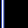

|
第17課 |
|  |
|
2D 圖像文字:
在這一課中，你將學會如何使用四邊形紋理貼圖把文字顯示在屏幕上。你將學會如何把256個不同的文字從一個256x256的紋理圖像中分別提取出來，並為每一個文字創建一個顯示列表，接著創建一個輸出函數來創建任意你希望的文字。 |
|
 |
 |
本教程由NeHe和Giuseppe D'Agata提供。
我知道每個人都或許厭惡字體。目前為止我寫的文字教程不僅能顯示文字，還能顯示3D文字，有紋理貼圖的文字，以及處理變量。但是當你將你的作品移植到不支持位圖或是輪廓字體的機器上會發生什麼事呢？
由於Giuseppe D'Agata我們有了另一篇字體教程。你還會問什麼？如果你記得在第一篇字體教程中我提到使用紋理在屏幕上繪製文字。通常當你使用紋理繪製文字時你會調用你最喜歡的圖像處理程序，選擇一種字體，然後輸入你想顯示的文字或段落。然後你保存位圖並把它作為紋理讀入到你的程序裡。對一個需要很多文字或是文字在不停變化的程序來說這麼做效率並不高。
本教程只使用有一個紋理來顯示任意256個不同的字符。記住平均一個字符只有16個像素寬，大概16個像素高。如果你使用標準的256x256的紋理那麼很明顯你可以放入交叉的16個文字（即一個X），且最多16行16列。如果你需要一個更詳細的解釋：紋理是256個像素寬，一個字符是16個像素寬，256除以16得16:)
現在讓我們來創建一個2D紋理字體demo！這課的程序基於第一課的代碼。在程序的第一段，我們包括數學（math）和標準輸入輸出庫（stdio）。我們需要數學庫來使用正弦和餘弦函數在屏幕上移動我們的文字，我們需要標準輸入輸出庫來保證在我們製作紋理前要使用的位圖實際存在。
|
|
|
我們將要加入一個變量base來指向我們的顯示列表。我們還加入texture[2]來保存我們將要創建的兩個紋理。Texture
1將是字體紋理，texture 2將是用來創建簡單3D物體的凹凸紋理。
我們加入用來執行循環的變量loop。最後我們加入用來繞屏幕移動文字和旋轉3D物體的cnt1和cnt2。
|
|
GLuint base; // 繪製字體的顯示列表的開始位置
GLuint texture[2]; // 保存字體紋理
GLuint loop; // 通用循環變量
GLfloat cnt1; // 字體移動計數器1
GLfloat cnt2; // 字體移動計數器2
|
接下來是讀取紋理代碼。這跟前面紋理影射教程中的一模一樣。 |
|
|
下面的代碼同樣對之前教程的代碼改動很小。如果你不清楚下面每行的用途，回頭複習一下。
注意TextureImage[ ]將保存2個rgb圖像記錄。複查處理讀取或存儲紋理的紋理很重要。一個錯誤的數字可能導致內存溢出或崩潰！ |
|
int LoadGLTextures() // 載入位圖(調用上面的代碼)並轉換成紋理
{
int Status=FALSE; // 狀態指示器
AUX_RGBImageRec *TextureImage[2]; // 創建紋理的存儲空間
|
下一行十分重要。如果你用別的數字替換2將發生嚴重問題。再查一次！這個數字應該與你在設置TextureImages[
]時的數字相匹配。
我們將讀取的紋理是font.bmp 和bumps.bmp。第二個紋理可用任何你想用的紋理替換。我不是特別有創造性，所以我使的紋理可能有些單調。
|
|
memset(TextureImage,0,sizeof(void *)*2); // 將指針設為 NULL
if ((TextureImage[0]=LoadBMP("Data/Font.bmp")) && // 載入字體圖像
(TextureImage[1]=LoadBMP("Data/Bumps.bmp"))) // 載入紋理圖像
{
Status=TRUE; // 將 Status 設為 TRUE
|
另一十分重要，要檢查兩遍的行。我無法開始告訴你我收到多少email問「為什麼我只看到一個紋理，或為什麼我的紋理是全白的！？！」通常問題都出在這行。如果你用1替換2，那麼將只創建一個紋理，第二個紋理將顯示為全白。如果你用3替換2，你的程序可能崩潰！
你應該只調用glGenTextures()一次。調用glGenTextures()後你應該創建你的所有紋理。我曾見過有人在每創建一個紋理前都加上一行glGenTextures()。這通常導致新建的紋理覆蓋了你之前創建的。決定你需要創建多少個紋理是個好主意，調用glGenTextures()一次，然後創建所有的紋理。把glGenTextures()放進循環是不明智的，除非你有自己的理由。
|
|
glGenTextures(2, &texture[0]); // 創建紋理
for (loop=0; loop<2; loop++) // 循環設置所有的紋理
{
// 生成所有紋理
glBindTexture(GL_TEXTURE_2D, texture[loop]);
glTexParameteri(GL_TEXTURE_2D,GL_TEXTURE_MAG_FILTER,GL_LINEAR);
glTexParameteri(GL_TEXTURE_2D,GL_TEXTURE_MIN_FILTER,GL_LINEAR);
glTexImage2D(GL_TEXTURE_2D, 0, 3, TextureImage[loop]->sizeX, TextureImage[loop]->sizeY, 0, GL_RGB, GL_UNSIGNED_BYTE, TextureImage[loop]->data);
}
}
|
下面的幾行代碼檢查我們讀取的位圖數據是否在內存裡。如果是，釋放內存。注意我們還要檢查並釋放rgb圖像記錄。如果我們使用了3個不同的圖像來創建紋理，我們要檢查並釋放3個rgb圖像記錄。 |
|
for (loop=0; loop<2; loop++)
{
if (TextureImage[loop]) // 紋理是否存在
{
if (TextureImage[loop]->data) // 紋理圖像是否存在
{
free(TextureImage[loop]->data); // 釋放紋理圖像佔用的內存
}
free(TextureImage[loop]); // 釋放圖像結構
}
}
return Status; // 返回 Status
}
|
現在我們將創建字體。我將以同樣的細節來解釋這段代碼。這並沒那麼複雜，但是有些數學要瞭解，我知道不是每個人都喜歡數學。 |
|
GLvoid BuildFont(GLvoid) // 創建我們的字符顯示列表
{
|
下面兩個變量將用來保存字體紋理中每個字的位置。cx將用來保存紋理中水平方向的位置，cy將用來保存紋理中豎直方向的位置。
|
|
float cx; // 字符的X坐標
float cy; // 字符的Y坐標
|
接著我們告訴OpenGL我們要建立256個顯示列表。變量base將指向第一個顯示列表的位置。第二個顯示列表將是base+1，第三個是base+2，以此類推。
下面的第二行代碼選擇我們的字體紋理（texture[0]）。 |
|
base=glGenLists(256); // 創建256個顯示列表
glBindTexture(GL_TEXTURE_2D, texture[0]); // 選擇字符圖像
|
現在我們開始循環。循環間創建所有的256個字符，每個存在它自己的顯示列表裡。 |
|
for (loop=0; loop<256; loop++) // 循環256個顯示列表
{
|
下面的第一行或許看上去讓人有點困惑。%符號表示loop除以16的餘數。cx將我們通過字體紋理從左至右移動。你將注意到在後面的代碼中我們用1減去cy從而從上到下而不是從下到上移動我們。%符號很難解釋，但我將嘗試去解釋。
我們真正關心的是（loop%16）。/16只是將結果轉化為紋理坐標。所以如果loop等於16，cx將等於16/16的餘數也就是0。但cy將等於16/16也就是1。所以我們將下移一個字符的高度，且我們將不往右移。如果loop等於17，cx將等於17/16也就是1.0625。餘數0.625也等於1/16。意味著我們將右移一個字符。cy將仍是1因為我們只關心小數點左邊的數字。18/16將右移2個字符，但仍下移一個字符。如果loop是32，cx將再次等於0，因為32除以16沒有餘數，但cy將等於2。因為小數點左邊的數字現在是2，將下移2個字符。這麼講清楚嗎？
|
|
cx=float(loop%16)/16.0f; // 當前字符的X坐標
cy=float(loop/16)/16.0f; // 當前字符的Y坐標
|
Ok。現在我們通過從字體紋理中依據cx和cy的值選擇一個單獨的字符創建了2D字體。在下面的行裡我們給base的值加上loop，若不這麼做，每個字都將建在第一個顯示列表裡。我們當然不想要那樣的事發生，所以通過給base加上loop，我們創建的每個字都被存在下個可用的顯示列表裡。 |
|
glNewList(base+loop,GL_COMPILE); //開始創建顯示列表
|
現在我們已選擇了我們要創建的顯示列表，我們創建字符。這是通過繪製四邊形，然後給他貼上字體紋理中的單個字符的紋理來完成的。 |
|
glBegin(GL_QUADS); // 使用四邊形顯示每一個字符
|
cx和cy應該保存一個從0.0到1.0的非常小的浮點數。如果cx和cy同時為0，下面第一行的代碼將為：glTexCoord2f(0.0f,1-0.0f-0.0625f)。記得0.0625正是我們紋理的1/16，或者說是一個字符的寬/高。下面的紋理坐標將是我們紋理的左下角。
注意我們使用glVertex2i(x,y)而不是glVertex3f(x,y,z)。我們的字體是2D字體，所以我們不需要z值。因為我們使用的是正交投影，我們不需要移進屏幕。在一個正交投影平面繪圖你所需的是指定x和y坐標。因為我們的屏幕是以像素形式從0到639（寬）從0到479（高），我們既不需用浮點數也不用負數:)
我們設置正交投影屏幕的方式是，(0,0)將是屏幕的左下角，(640,480)是屏幕的右上角。x軸上0是屏幕的左邊界，639是右邊界。y軸上0時下便捷，479是上便捷。基本上我們避免了負坐標。對那些不在乎透視，更願意同像素而不是單元打交道的人來說更方便:)
|
|
glTexCoord2f(cx,1-cy-0.0625f); // 左下角的紋理坐標
glVertex2i(0,0); // 左下角的坐標
|
下一個紋理坐標現在是上個紋理坐標右邊1/16（剛好一個字符寬）。所以這將是紋理的右下角。
|
|
glTexCoord2f(cx+0.0625f,1-cy-0.0625f); // 右下角的紋理坐標
glVertex2i(16,0); // 右下角的坐標
|
第三個紋理坐標在我們的字符的最右邊，但上移了紋理的1/16（剛好一個字符高）。這將是一個單獨字符的右上角。 |
|
glTexCoord2f(cx+0.0625f,1-cy); // 右上角的紋理坐標
glVertex2i(16,16); // 右上角的坐標
|
最後我們左移來設置字符左上角的最後一個紋理坐標。 |
|
glTexCoord2f(cx,1-cy); // 左上角的紋理坐標
glVertex2i(0,16); // 左上角的坐標
glEnd(); // 四邊形字符繪製完成
|
最終，我們右移了10個像素，置於紋理的右邊。如果我們不平移，文字將被繪製到各自的上面。由於我們的字體太窄，我們不想右移16個像素。如果那樣的話，每個字之間將有很大間隔。只移動10個像素去除了間隔。
|
|
glTranslated(10,0,0); // 繪製完一個字符，向右平移16個單位
glEndList(); // 字符顯示列表結束
} // 循環建立256個顯示列表
}
|
下面這段代碼與我們在其它字體教程中用來在程序退出前釋放顯示列表的相同。所有自base開始的256個顯示列表都將被銷毀（這樣做很好！）。
|
|
GLvoid KillFont(GLvoid)
{
glDeleteLists(base,256); // 從內存中刪除256個顯示列表
}
|
下一段代碼將完成繪圖。一切都幾乎是新的，所以我將盡可能詳細的解釋每一行。一個小提示：很多都可加入這段代碼，像是變量的支持，字體大小、間距的調整，和很多為恢復到我們決定打印前的狀況所做的檢查。
glPrint()有三個參數。第一個是屏幕上x軸上的位置（從左至右的位置），下一個是y軸上的位置（從下到上...0是底部，越往上越大）。然後是字符串（我們想打印的文字），最後是一個叫做set的變量。如果你看過Giuseppe
D'Agata製作的位圖，你會注意到有兩個不同的字符集。第一個字符集是普通的，第二個是斜體的。如果set為0，第一個字符集被選中。若set為1則選擇第二個字符集。 |
|
GLvoid glPrint(GLint x, GLint y, char *string, int set) // 繪製字符
{
|
我們要做的第一件事是確保set的值非0即1。如果set大於1，我們將使它等於1。 |
|
if (set>1) // 如果字符集大於1
{
set=1; // 設置其為1
}
|
現在我們選擇字體紋理。我們這麼做是防止在我們決定往屏幕上輸出東西時選擇了不同的紋理。 |
|
glBindTexture(GL_TEXTURE_2D, texture[0]); // 綁定為字體紋理
|
現在我們禁用深度測試。我這麼做是因為混合的效果會更好。如果你不禁用深度測試，文字可能會被什麼東西擋住，或得不到正確的混合效果。如果你不打算混合文字（那樣文字周圍的黑色區域就不會顯示）你可以啟用深度測試。
|
|
glDisable(GL_DEPTH_TEST); // 禁止深度測試
|
下面幾行十分重要！我們選擇投影矩陣。之後使用一個叫做glPushMatrix()的命令。glPushMatrix存儲當前矩陣（投影）。有些像計算器的存儲按鈕。 |
|
glMatrixMode(GL_PROJECTION); // 選擇投影矩陣
glPushMatrix(); // 保存當前的投影矩陣
|
現在我們保存了投影矩陣，重置矩陣並設置正交投影屏幕。第一和第三個數字（0）表示屏幕的底邊和左邊。如果願意我們可以將屏幕的左邊設為-640，但如果不需要我們為什麼要設負數呢。第二和第四個數字表示屏幕的上邊和右邊。將這些值設為你當前使用的分辨率是明智的做法。我們不需要用到深度，所以我們將z值設為-1與1。 |
|
glLoadIdentity(); // 重置投影矩陣
glOrtho(0,640,0,480,-1,1); // 設置正投影的可視區域
|
現在我們選擇模型視點矩陣，用glPushMatrix()保存當前設置。然後我們重置模型視點矩陣以便在正交投影視點下工作。
|
|
glMatrixMode(GL_MODELVIEW); // 選擇模型變換矩陣
glPushMatrix(); // 保存當前的模型變換矩陣
glLoadIdentity(); // 重置模型變換矩陣
|
在保存了透視參數，設置了正交投影屏幕後，現在我們可以繪製文字了。我們從移動到繪製文字的位置開始。我們使用
glTranslated()而不是glTranslatef()因為我們處理的是像素，所以浮點值並不重要。畢竟，你不可能用半個像素:) |
|
glTranslated(x,y,0); // 把字符原點移動到(x,y)位置
|
下面這行選擇我們要使用的字符集。如果我們想使用第二個字符集，我們在當前的顯示列表基數上加上128（128時我們256個字符的一半）。通過加上128，我們跳過了頭128個字符。 |
|
glListBase(base-32+(128*set)); // 選擇字符集
|
現在剩下的就是在屏幕上繪製文字了。我們同其它字體教程一樣來完成這步。我們使用glCallLists()。strlen(string)是字符串的長度（我們想繪製多少字符），GL_UNSIGNED_BYTE意味著每個字符被表示為一個無符號字節（一個字節是一個從0到255的值）。最後，字符串保存我們想打印的文字。
|
|
glCallLists(strlen(string),GL_BYTE,string); // 把字符串寫入到屏幕
|
現在我們所要做的是恢復透視視圖。我們選擇投影矩陣並用glPopMatrix()恢復我們先前用glPushMatrix()保存的設置。用相反的順序恢復設置很重要。
|
|
glMatrixMode(GL_PROJECTION); // 選擇投影矩陣
glPopMatrix(); // 設置為保存的矩陣
|
現在我們選擇模型視點矩陣，做相同的工作。我們使用glPopMatrix()恢復模型視點矩陣到我們設置正交投影顯示之前。
|
|
glMatrixMode(GL_MODELVIEW); // 選擇模型矩陣
glPopMatrix(); // 設置為保存的矩陣
|
最後，我們啟用深度測試。如果你沒有在上面的代碼中關閉深度測試，你不需要這行。 |
|
glEnable(GL_DEPTH_TEST); // 啟用深度測試
}
|
我們沒有修改ReSizeGLScene()，所以我們直接跳到InitGL()。
|
|
int InitGL(GLvoid) // 此處開始對OpenGL進行所有設置
{
|
我們跳到創建紋理的代碼。如果由於某種原因創建紋理失敗了，我們返回FALSE。這將讓我們的程序知道發生了一個錯誤從而關閉程序。 |
|
if (!LoadGLTextures()) // 調用紋理載入子例程
{
return FALSE; // 如果未能載入，返回FALSE
}
|
如果沒有錯，我們跳到創建字體的代碼。在創建字體時不會出什麼錯所以我們省略了錯誤檢查。
|
|
BuildFont(); // 創建字符顯示列表
|
現在我們做通常的GL設置。我們將背景色設為黑色，將深度清為1.0。我們選擇一個深度測試模式和一個混合模式。我們啟用平滑著色，最後啟用2維紋理映射。 |
|
glClearColor(0.0f, 0.0f, 0.0f, 0.0f); // 黑色背景
glClearDepth(1.0); // 設置深度緩存
glDepthFunc(GL_LEQUAL); // 所作深度測試的類型
glBlendFunc(GL_SRC_ALPHA,GL_ONE); // 設置混合因子
glShadeModel(GL_SMOOTH); // 啟用陰影平滑
glEnable(GL_TEXTURE_2D); // 啟用紋理映射
return TRUE; // 初始化成功
}
|
下面這段代碼將完成繪圖。我們先繪製3D物體最後繪製文字，這樣文字將顯示在3D物體上面，而不會被3D物體遮住。我之所以加入一個3D物體是為了演示透視投影和正交投影可同時使用。 |
|
int DrawGLScene(GLvoid) // 從這裡開始進行所有的繪製
{
glClear(GL_COLOR_BUFFER_BIT | GL_DEPTH_BUFFER_BIT); // 清除屏幕和深度緩存
glLoadIdentity(); // 重置當前的模型觀察矩陣
|
我們選擇bumps.bmp紋理來創建簡單的小3D物體。為了看見3D物體，我們往屏幕內移動5個單位。我們繞z軸旋轉45度。這將使我們的四邊形順時針旋轉45度，讓我們的四邊形看起來更像鑽石而不是矩形。 |
|
glBindTexture(GL_TEXTURE_2D, texture[1]); // 設置為圖像紋理
glTranslatef(0.0f,0.0f,-5.0f); // 移入屏幕5個單位
glRotatef(45.0f,0.0f,0.0f,1.0f); // 沿Z軸旋轉45度
|
在旋轉45度後，我們讓物體同時繞x軸和y軸旋轉cnt1x30度。這使我們的物體像在一個點上旋轉的鑽石那樣旋轉。 |
|
glRotatef(cnt1*30.0f,1.0f,1.0f,0.0f); // 沿(1,1,0)軸旋轉30度
|
我們關閉混合（我們希望3D物體看上去像實心的），設置顏色為亮白色。然後我們繪製一個單獨的用了紋理映像的四邊形。 |
|
glDisable(GL_BLEND); // 關閉混合
glColor3f(1.0f,1.0f,1.0f); //設置顏色為白色
glBegin(GL_QUADS); // 繪製紋理四邊形
glTexCoord2d(0.0f,0.0f);
glVertex2f(-1.0f, 1.0f);
glTexCoord2d(1.0f,0.0f);
glVertex2f( 1.0f, 1.0f);
glTexCoord2d(1.0f,1.0f);
glVertex2f( 1.0f,-1.0f);
glTexCoord2d(0.0f,1.0f);
glVertex2f(-1.0f,-1.0f);
glEnd();
|
在畫完第一個四邊形後，我們立即同時繞x軸和y軸旋轉90度。然後我們畫下一個四邊形，。第二個四邊形從第一個四邊形的中間切過去，來形成一個好看的形狀。 |
|
glRotatef(90.0f,1.0f,1.0f,0.0f); // 沿(1,1,0)軸旋轉90度
glBegin(GL_QUADS); // 繪製第二個四邊形，與第一個四邊形垂直
glTexCoord2d(0.0f,0.0f);
glVertex2f(-1.0f, 1.0f);
glTexCoord2d(1.0f,0.0f);
glVertex2f( 1.0f, 1.0f);
glTexCoord2d(1.0f,1.0f);
glVertex2f( 1.0f,-1.0f);
glTexCoord2d(0.0f,1.0f);
glVertex2f(-1.0f,-1.0f);
glEnd();
|
在繪製完有紋理貼圖的四邊形後，我們開啟混合併繪製文字。 |
|
glEnable(GL_BLEND); // 啟用混合操作
glLoadIdentity(); // 重置視口
|
我們使用同其它字體教程一樣的生成很棒的顏色的代碼。顏色會隨著文字的移動而逐漸改變。
|
|
// 根據字體位置設置顏色
glColor3f(1.0f*float(cos(cnt1)),1.0f*float(sin(cnt2)),1.0f-0.5f*float(cos(cnt1+cnt2)));
|
我們來繪製文字。我們仍然使用glPrint()。第一個參數是x坐標，第二個是y坐標，第三個（"NeHe"）是要繪製的文字，最後一個是使用的字符集（0-普通，1-斜體）。
正如你猜的，我們使用SIN和COS連同計數器cnt1和cnt2來移動文字。如果你不清楚SIN和COS的作用，閱讀之前的教程。 |
|
glPrint(int((280+250*cos(cnt1))),int(235+200*sin(cnt2)),"NeHe",0);
glColor3f(1.0f*float(sin(cnt2)),1.0f-0.5f*float(cos(cnt1+cnt2)),1.0f*float(cos(cnt1)));
glPrint(int((280+230*cos(cnt2))),int(235+200*sin(cnt1)),"OpenGL",1);
|
我們將屏幕底部作者名字的顏色設為深藍色和白色。然後用亮白色文字再次繪製他的名字。亮白色文字是有點偏藍色的文字。這創造出一種附有陰影的樣子。（如果混合沒打開則沒有這種效果）。
|
|
glColor3f(0.0f,0.0f,1.0f);
glPrint(int(240+200*cos((cnt2+cnt1)/5)),2,"Giuseppe D'Agata",0);
glColor3f(1.0f,1.0f,1.0f);
glPrint(int(242+200*cos((cnt2+cnt1)/5)),2,"Giuseppe D'Agata",0);
|
我們所做的最後一件事是以不同的速率遞增我們的計數器。這使得文字移動，3D物體自轉。 |
|
cnt1+=0.01f; // 增加計數器值
cnt2+=0.0081f; // 增加計數器值
return TRUE; // 成功返回
}
|
KillGLWindow(), CreateGLWindow()和WndProc()的代碼都沒有更改，所以我們跳過它們。 |
|
|
如下所示，最後要做的是在KillGLWindow()的最後添加KillFont()。添加這行很重要，它在我們退出程序前將所有的清除乾淨。
|
|
KillFont(); // 刪除字體
|
我認為現在我可以正式說我的網站已經把所有繪製文字的方法教給大家了{笑}。總之，我認為我的教程很不錯。這課的代碼可在任何能運行OpenGL的電腦上運行，它很容易使用，且這樣繪製文字對系統的資源消耗很少。
我要感謝這篇教程的原作者Giuseppe D'Agata。我做了大量的修改，並將它轉變為新式的代碼，但要是沒有他寄給我這份代碼我是不會完成這篇教程的。他的代碼有更多的選項，像是改變文字間距等等。但我用很cool的3D物體來彌補了{笑}。
我希望你們喜歡這篇教程。若有什麼問題，給我或Giuseppe D'Agata發email。
Giuseppe D'Agata
Jeff Molofee (NeHe)
 |
版權與使用聲明:
我是個對學習和生活充滿激情的普通男孩,在網絡上我以DancingWind為暱稱，我的聯繫方式是zhouwei02@mails.tsinghua.edu.cn，如果你有任何問題，都可以聯繫我。
引子
網絡是一個共享的資源，但我在自己的學習生涯中浪費大量的時間去搜索可用的資料，在現實生活中花費了大量的金錢和時間在書店中尋找資料，於是我給自己起了個暱稱DancingWind，其意義是想風一樣從各個知識的站點中吸取成長的養料。在飄蕩了多年之後，我決定把自己收集的資料整理為一個統一的資源庫。
版權聲明
所有DancingWind發表的內容，大多都來自共享的資源，所以我沒有資格把它們據為己有，或聲稱自己為這些資源作出了一點貢獻。故任何人都可以複製，修改，重新發表，甚至以自己的名義發表，我都不會追究，但你在做以上事情的時候必須保證內容的完整性，給後來的人一個完整的教程。最後，任何人不能以這些資料的任何部分，謀取任何形式的報酬。
發展計劃
在國外，很多資料都是很多人花費幾年的時間慢慢積累起來的。如果任何人有興趣與別人共享你的知識，我很歡迎你與我聯繫，但你必須同意我上面的聲明。
感謝
感謝我的母親一直以來對我的支持和在生活上的照顧。
感謝我深愛的女友田芹，一直以來默默的在精神上和生活中對我的支持，她甚至把買衣服的錢都用來給我買書了，她真的是我見過的最好的女孩，希望我能帶給她幸福。
資源下載:
文檔 網頁格式
PDF格式
源碼 RAR格式 |
|
|